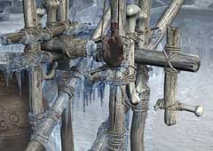

| 概要 | 地図 |
| 淡いヒント集 | ヒント集 | 的確なヒント集 |
| 攻略最短ルート |
| 場所選択に戻る |
ユコール族の村(前半)
|  水くみ器の所へ移動 「空の水筒」、「コルク栓」を入手 水くみ器の糸の先端に「空の水筒」を引っかけ、2度ハンドルを回す 「水の入った水筒」を入手 ユーキーのいるオリを調べ、「魚の骨」を入手 村はずれの洞窟へ移動し、左の穴へ入る  壁の穴を調べ、右下の穴へ「コルク栓」を入れる  そばにある、奇妙なオブジェに「祈りの車輪」を取り付け回す (ハルファンが来る) 壁の穴を調べ、ネズミの前方の穴に「コルク栓」を入れる ネズミの後方の穴に「コルク栓」を入れる ネズミの真上の穴に対して「水の入った水筒」を使う (ネズミが実を食べ、移動し終わるまで待つ)  ネズミの真上の穴に対し、「魚の骨」を使う 「幸福の赤い実」を入手 祈祷師の所へ移動し、祈祷師に話しかける (ムービー)
| << 前へ |
|
| 場所選択に戻る |
| 概要 | 地図 |
| 淡いヒント集 | ヒント集 | 的確なヒント集 |
| 攻略最短ルート |
Syberia II
| 目次へ戻る | ページの上部へ |